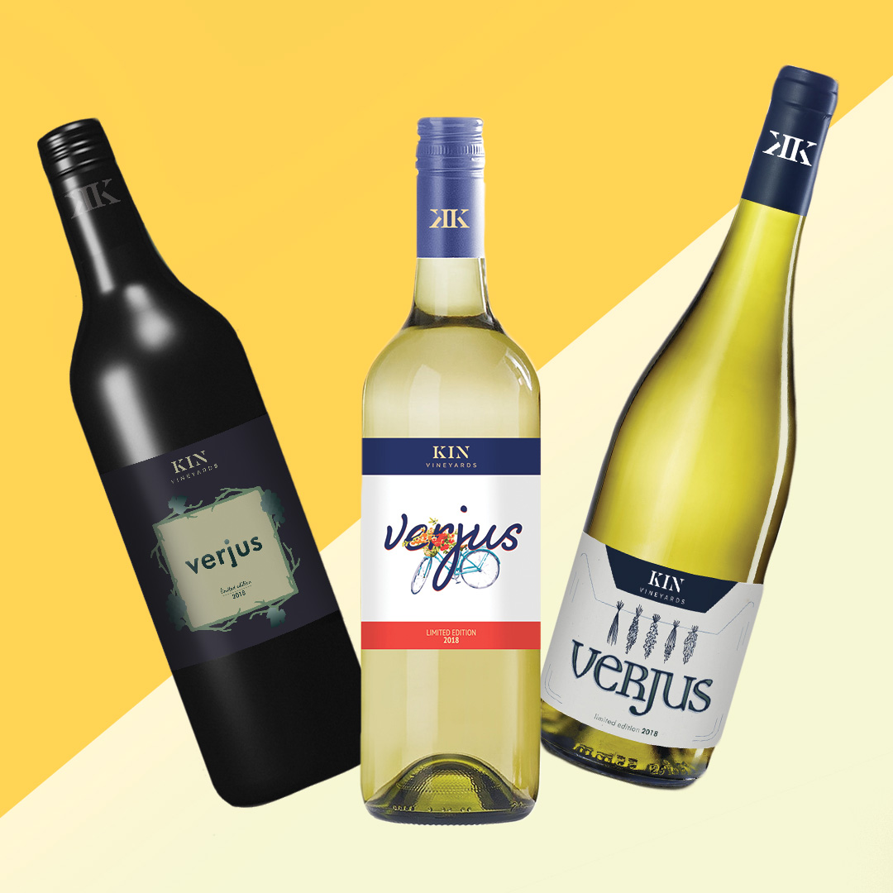
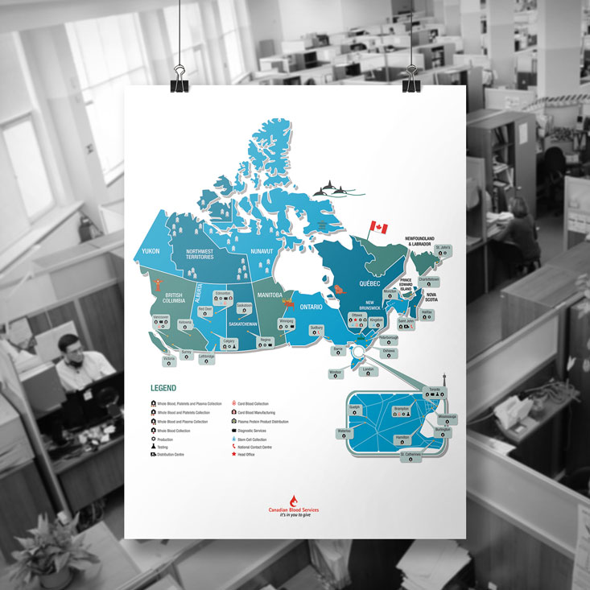
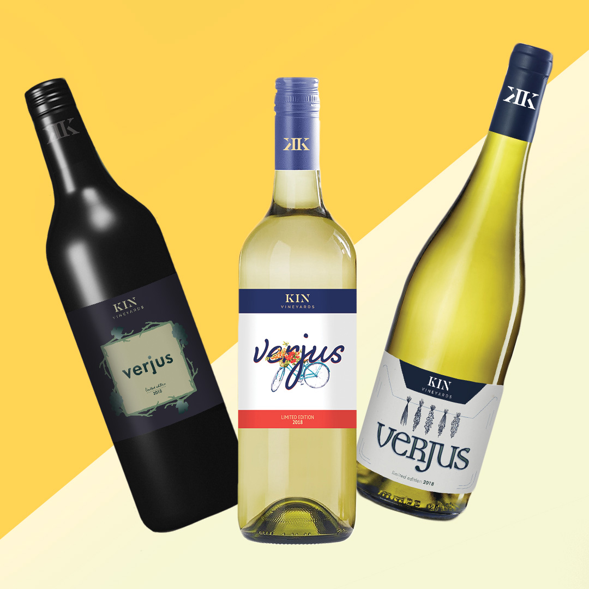
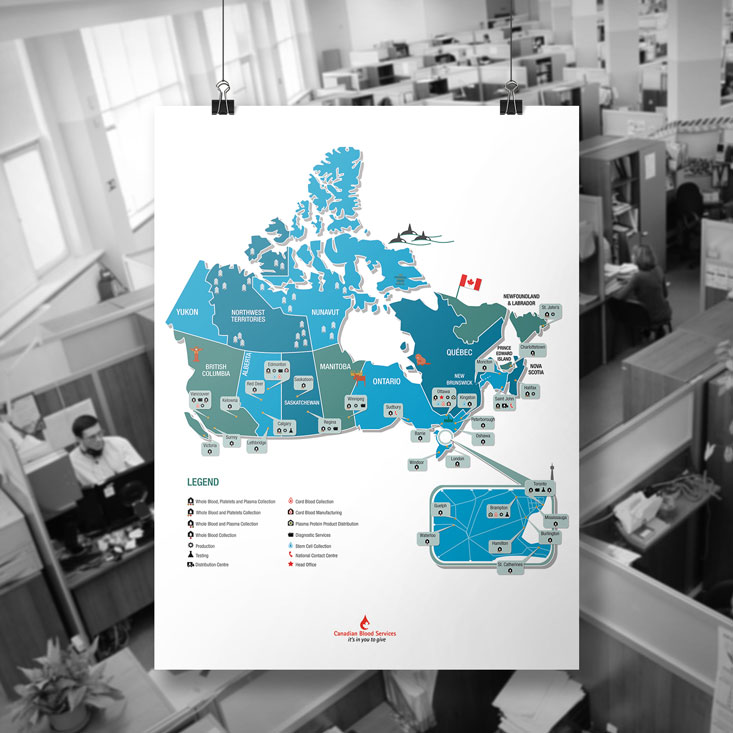

I'm a graphic designer and illustrator with a flair for motion graphics. My background in fine art and sales management gives me a unique perspective and approach in my career.
I have over 2 years professional experience ranging from multiple internships, to my position as a senior graphic designer.
I am a passionate, hard-worker, who thrives in a collaborative fast-paced environment.